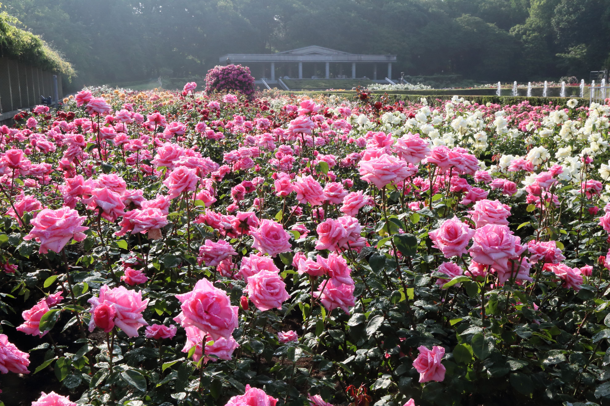
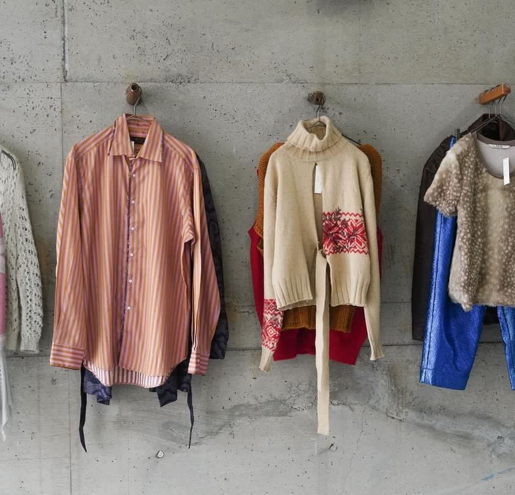

第2回京王線スポット総選挙
明治大学出見世ゼミ×京王電鉄プロジェクト
京王沿線のスポットを楽しめるコース12選
「10月1日〜11月5日」に行われた第二回京王線スポット総選挙に出ていた観光スポットを絡めた12個のコースをご紹介します。休みの日や授業の空きコマ等に電車で立ち寄ってみてはいかがですか？
- 01 長沼公園で心と体をリフレッシュ (長沼駅)
- 02 新鮮な海鮮を食べた後は大迫力の東京競馬場へ！(府中競馬正門前駅、分倍河原駅)
- 03 温泉で体を洗い流した夜はキャンプ (高尾駅)
- 04 お洒落な古着&グルメ巡り (布田駅)
- 05 深大寺、植物園、温泉で喧騒から離れてゆったり (調布駅、つつじヶ丘駅)
- 06 映えるお寺カフェの後は食べ歩き (仙川駅)
- 07 映画の撮影地にもなった商店街からのアウトレット! (南大沢駅)
- 08 ぶどう狩りも後は温泉でお腹も体も大満足 (仙川駅)
- 09 食べ歩き、お参り、桜の名所! (調布駅)
- 10 よみうりランドとHANA・BIYORIで一日中遊べる (よみうりランド駅)
- 11 古着巡りからの映画コース (多摩センター駅)
- 12 たくさんの猿を見て癒される! (高尾山駅)
都内にも関わらず森林浴が楽しめる長沼公園で景色を見た後は、鎌田鳥山でご飯を食べて締めに竜泉寺の湯でゆったり。
日々の喧騒から離れた一日でデジタルデトックスしてみてはいかがですか？
[infomation:長沼公園]
住所:東京都八王子市長沼町・下柚木
アクセス:京王線「長沼駅」徒歩5分
詳細:長沼公園公式サイト
午前に新鮮な海鮮を食べて、賭けても賭けなくても楽しめる東京競馬場へ！
[infomation:大東京綜合卸売センター]
住所:東京都府中市矢崎町4-1
アクセス:京王線「分倍河原駅」よりバスで「郷土の森総合体育館」下車徒歩5分
詳細:大東京綜合卸売センター公式サイト
[infomation:東京競馬場]
住所:東京都府中市日吉町１−１
アクセス:京王線「府中競馬正門前駅」徒歩２分
詳細:東京競馬場 JRA公式サイト
体を洗い流した後はキャンプへ！薪割り、ピザ作りなどの様々なアクティビティを楽しむことができます。
[infomation:TAKAO CAMP PARK -RAFT-]
住所:東京都八王子市元八王子町2-1419
アクセス:京王線「高尾駅」よりバスで「元八二丁目北」徒５分
詳細:高尾キャンプパーク公式サイト
牛舎を改装して作られたおしゃれな店内の古着屋を見た後はパンケーキを食べて一休み！
[infomation:Vintage&Used BYRE]
住所:東京都調布市布田3-53-3
アクセス:京王線「布田駅」徒歩５分
詳細:Vintage&Used BYRE公式サイト
深大寺でお参りをした後に4500種類の植物が植えられている歴史ある植物園へ。

締めは深大寺天然温泉で！
[infomation:深大寺]
住所:東京都調布市深大寺元町５-15
アクセス:京王線「調布駅」「つつじヶ丘駅」よりバスで「深大寺」徒歩１分
詳細:深大寺公式サイト
[infomation:神代植物公園]
住所:調布市深大寺元町5-31-10
アクセス:京王線「調布駅」よりバスで「神代植物公園前」下車徒歩2分
詳細:神代植物公園公式サイト
[infomation:深大寺天然温泉 湯守の里]
住所:東京都調布市深大寺元町２-12-2
アクセス:京王線「調布駅」より無料シャトルバス10分
詳細:深大寺天然温泉 湯守の里公式サイト
他では見られない御朱印のデザイン、お寺の一部を改装した斬新なカフェを楽しんだあとは、最寄駅の仙川商店街へ。
[infomation:一龍院]
住所:東京都調布市入間町1-38-1
アクセス:京王線「仙川駅」徒歩１５分
詳細:一龍院公式サイト
[infomation:仙川商店街]
住所:東京都調布市仙川町１丁目６−１０
アクセス:京王線「仙川駅」徒歩１分
詳細:仙川商店街公式サイト
映画の撮影にも使われた、人が戻ってきた地域と繋がっている商店街で、おしゃれなお店もある
商店街を楽しんだ後はアウトレットでお買い物！
[infomation:南大沢三丁目商店街]
住所:東京都八王子市南大沢3
アクセス:京王線「南大沢駅」徒歩１５分
山内ぶどう園でぶどう狩りや野菜を採ったをした後は、去年の人気選挙でランクインした温泉に行き、締めのラーメンで体もお腹も大満足！
[infomation:山内ぶどう園]
住所:東京都調布市若葉町3-28-2
アクセス:京王線「仙川駅」徒歩10分
詳細:山内ぶどう園公式Facebook

ゲゲゲの鬼太郎のキャラクターたちを横目に商店街を楽しんだ後は布多天神社でお参り。
帰り道は桜の名所へ！
[infomation:天神通り商店会]
住所:東京都調布市布田1-3-1
アクセス:京王線「調布駅」徒歩1分
詳細:天神通り商店会公式サイト
多様な花だけでなく、デジタルアートとの融合も楽しめる革新的な施設であるHANA・BIYORIへ！
そのあとはよみうりランドで五感が刺激される一日に！
[infomation:HANA・BIYORI]
住所:東京都稲城市矢野口４０１５−１
アクセス:京王線「よみうりランド駅」より無料シャトルバス3分もしくは徒歩10分
詳細:HANA・BIYORI公式サイト
おしゃれな店内でドメスティックブランドやレディースも多く扱っている古着屋SAJIへ

一通り楽しんだら映画を見て喫茶でゆったり！古着好きにもおすすめのコースです。
[infomation:古着屋SAJI]
住所:東京都多摩市落合４丁目８−１ 101
アクセス:京王線「多摩センター駅」よりバスで「青木葉公園」下車徒歩7分
詳細:古着屋SAJI公式サイト
70頭以上いるというさる達の可愛らしい姿に癒された後は高橋屋というそば屋さんへ！
[infomation:高尾山さる園・野草園]
住所:東京都稲城市矢野口４０１５−１
アクセス:ケーブルカー「高尾山乗り場」徒歩3分
詳細:高尾山さる園・野草園公式サイト